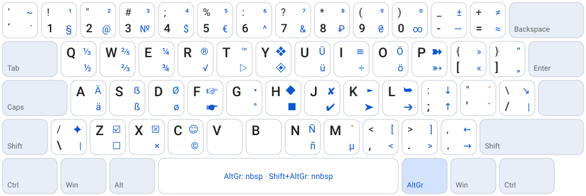

Дві розкладки, чотири мови
Російська розкладка, у якій є й українські літери, та англійська, у якій є й німецькі. Літери на звичних місцях, а все додаткове набирається з правим Alt. Для Windows, безкоштовно.
Версія 2611 від 17.11.2026 · Windows 10 і 11 · як встановити
Як вони виглядають
На кожній клавіші до чотирьох знаків: унизу ліворуч знак самої клавіші, угорі ліворуч знак із Shift, праворуч синім знаки з правим Alt (верхній ще й із Shift).


Чому саме так
Літери на своїх місцях
ЙЦУКЕН і QWERTY не змінені. Усе нове додано лише на правий Alt, тож руки друкують як раніше з першої хвилини.
Українські літери поруч зі схожими
ґ на Г, і на Ы, ї на Ъ, є на Э, усі з правим Alt. Російська й українська в одній розкладці, перемикатися не треба.
Умлаути на своїх літерах
ä на A, ö на O, ü на U, ß на S. Німецькі лапки „“ стоять на правому Alt біля дужок, а «ялинки» на сусідній клавіші.
Розділові знаки не стрибають
Крапка й кома стоять на одній клавіші праворуч від Ю в обох розкладках. Знаки над цифрами теж збігаються. Перемкнули мову, а пальці шукають те саме місце.
€, ₴, №, § на цифрах
З правим Alt: € на 5, ₴ на 9, № на 3, § на 1, @ на 2. Із Shift і правим Alt набираються степені: м², м³.
Пробіли, що не рвуть рядок
Правий Alt і пробіл дають нерозривний пробіл, тож «10 €» не розійдеться по рядках. Із Shift вийде вузький: «1 000», «z. B.».
é, á, š, č двома натисканнями
В EnDe: Shift, правий Alt і ', потім літера, і вийде é, á, ó. Shift, правий Alt і M, потім літера, і вийде š, č, ž. Для René, José, Dvořák.
Клавіша біля 1 вільна
Вона друкує рідкісний знак ʹ, якого немає у звичайному тексті, тому на неї зручно повісити виклик голосового введення. Звичайний апостроф набирається із Shift на тій самій клавіші.
Позначки, стрілки, дроби
☐ ☑ ☒ ✔ на Z, X, J, стрілки → ← ↑ ↓, дроби ½ ¾ у верхньому ряду літер.
Що додано
Що розкладки додають до стандартних розкладок Windows і навіщо. AltGr означає правий Alt.
Як встановити
- setup.exe: запускає встановлення й сам вибирає потрібний файл;
- …_amd64.msi: інсталятор для звичайних 64-бітних комп’ютерів із процесором Intel або AMD;
- …_i386.msi: інсталятор для старих 32-бітних Windows;
- …_ia64.msi: інсталятор для серверів Itanium, на звичайних комп’ютерах не потрібен;
- папки amd64, i386, ia64, wow64: самі файли розкладки для кожного виду Windows (wow64 потрібна 32-бітним програмам на 64-бітній Windows); окремо їх запускати не треба.
- Завантажте архів потрібної розкладки кнопкою вгорі сторінки й розпакуйте його в будь-яку папку. Після встановлення цю папку можна видалити.
- Запустіть setup.exe.
- Коли Windows попросить права адміністратора, погодьтеся.
- Відкрийте «Параметри», потім «Час і мова» та «Мова й регіон».
- Біля потрібної мови натисніть «…», потім «Параметри мови» та «Додати клавіатуру».
- Виберіть Russia-Ua 20261117 (для російської) або LAT-DEU 20261117 (для англійської).
- Якщо розкладки ще немає в списку, вийдіть з облікового запису Windows і увійдіть знову.
Щоб видалити, відкрийте «Параметри», потім «Програми» та «Інстальовані програми», знайдіть назву розкладки й натисніть «Видалити».